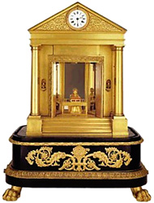

1830

Das Meisterwerk eines Uhrmachers aus Genua: Ein winzige Pianistin spielt Klavier, zwei Vögel singen, Türen eines Tempels öffnen sich automatisch. Die Uhr besteht aus etwa 3000 einzelnen Teilen.